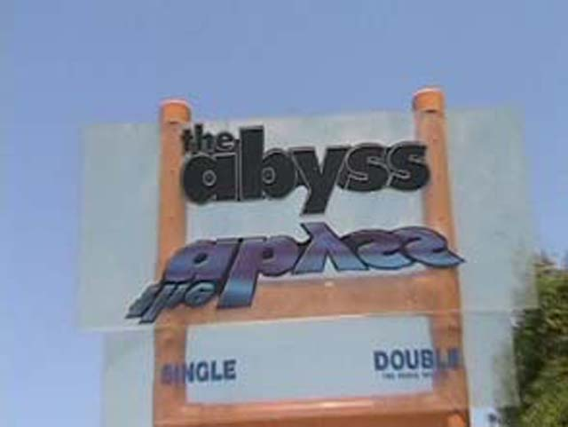
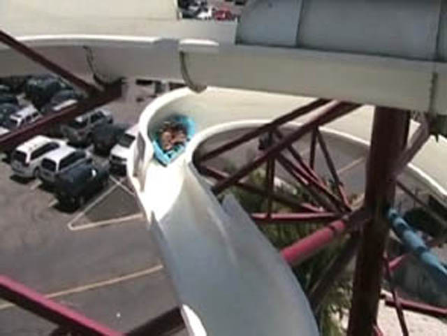
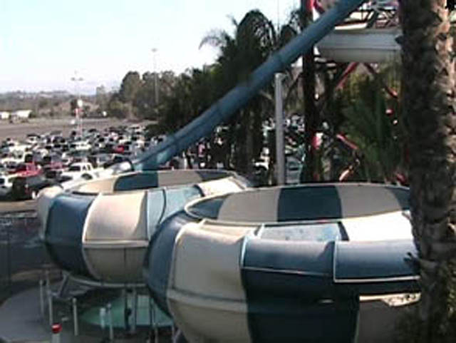
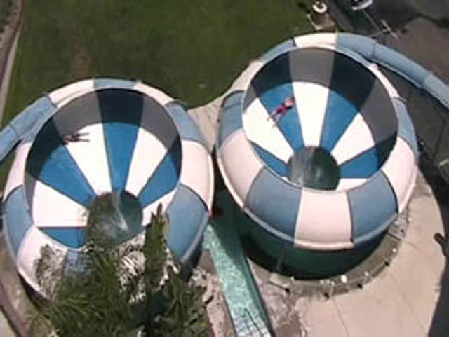
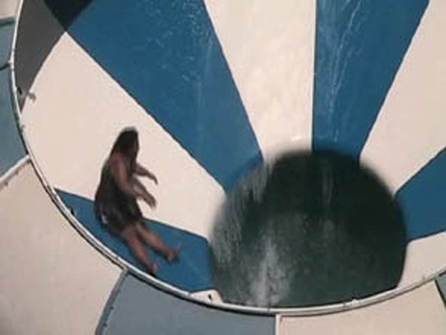
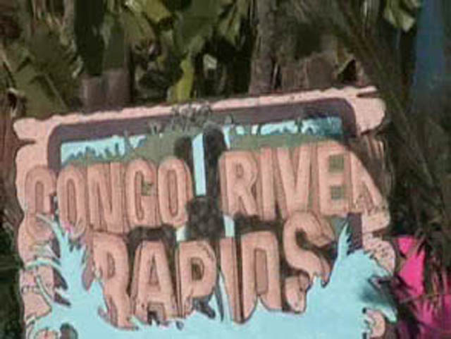
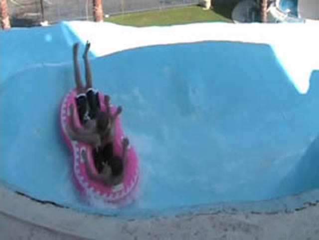
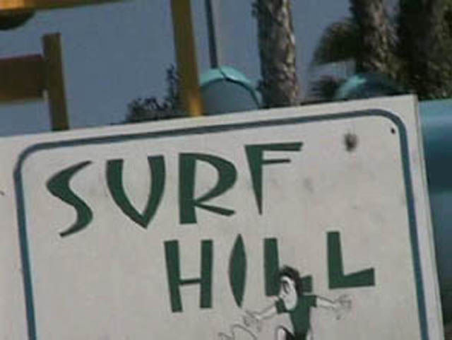
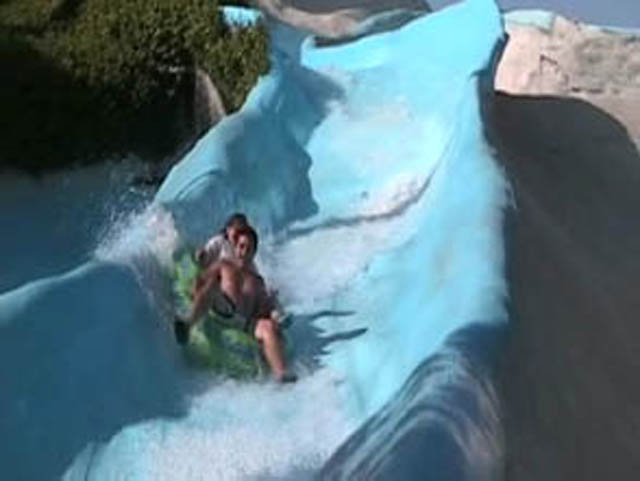
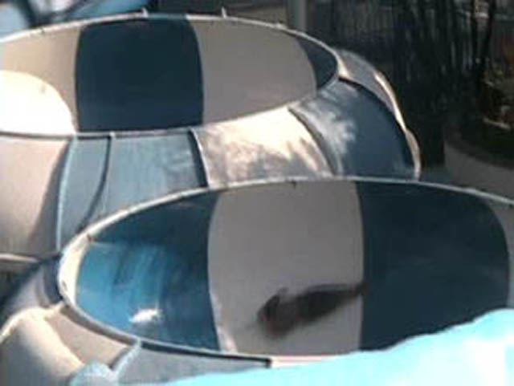

Wild Rivers 2007
After hearing that Wild Rivers was closing, I knew I had to get out here, and man, closing this place is a huge mistake!

Here is the Abyss. It is the biggest operating slide in Wild Rivers. And for some reason, it makes me think of cheese.
 While It looked like it was going to be good...
While It looked like it was going to be good...
 When the ride starts to get good, You hit the Trim Brakes. No, I am not joking. YOU GET TRIMMED ON THIS THING SEVERAL TIMES!!!!!! WHAT THE F**K!!!! DOES GOD HATE US OR WHAT!!! Well, At least we rode it first thing in the morning instead of waiting 2 hours to find out is sucks ass. I mean it! IT WAS WORSE THAN HIGH EXTREME!!! AND THAT IS SAYING ALOT!
When the ride starts to get good, You hit the Trim Brakes. No, I am not joking. YOU GET TRIMMED ON THIS THING SEVERAL TIMES!!!!!! WHAT THE F**K!!!! DOES GOD HATE US OR WHAT!!! Well, At least we rode it first thing in the morning instead of waiting 2 hours to find out is sucks ass. I mean it! IT WAS WORSE THAN HIGH EXTREME!!! AND THAT IS SAYING ALOT!
 Hi, I'm the Liquidator. You might recognize me from Malcom in the Middle. I however won't be able to let you ride me because I'm "dangerous".
Hi, I'm the Liquidator. You might recognize me from Malcom in the Middle. I however won't be able to let you ride me because I'm "dangerous".
 OH GOD! WHY DID YOU CURSE ME SO I CAN"T SNEAK UP THE LIQUIDATOR!!!!!!! IS THIS FOR WHAT I DID LAST NIGHT!!!!!!!
OH GOD! WHY DID YOU CURSE ME SO I CAN"T SNEAK UP THE LIQUIDATOR!!!!!!! IS THIS FOR WHAT I DID LAST NIGHT!!!!!!!
This is Wahtatubee. It is fun.
It has force and is Trimless. So its automatically better than Abyss.
 This is Bombay Blasters. Its the most screwed up waterslide ever.
This is Bombay Blasters. Its the most screwed up waterslide ever.
And it has Top Thrill Dragster Stands!
Its basically a Downward S Bend that shoots you out at the ending.
You come flying out of there faster than a speeding bullet.
Switzer Falls is basically a waterslide version of the slide at my old elementery school.
To some, This is a Ghetto Blizzard Beach.
Chaos looks like its going to suck.
 And it did. It was basically a tube version of Vortex at Raging Waters.
And it did. It was basically a tube version of Vortex at Raging Waters.
At Wild Rivers, Elephants crap out little kids.
GIVE ME A BANANA OR THESE KIDS DIE!!!!!!!!!
Some people wish we could all travel by lazy river.
 Heres the entrance to Bazooka Bowls and Patriot. Lets see how they are.
Heres the entrance to Bazooka Bowls and Patriot. Lets see how they are.

While Patriot was slow, it at least had enough speed unlike a ceratin slide here and another certain slide at Raging Waters.
 This half pipe was the only thing about this ride even worth looking at.
This half pipe was the only thing about this ride even worth looking at.

After going on a Fake Toilet Bowl, I was curious how a Real Toilet Bowl is.

OMFG!! THIS THING IS INSANE!!!!! IT HURTS LIKE A BITCH AND HAS AS MUCH G FORCE AS A MOTHERHUMPER!!!!! THIS SLIDE HOLDS THE TRUE HELIX OF DEATH!!!!!!

Bazooka Bowls will make a little kid constipated!!!

They have the old school Tube Chutes like Raging Waters used to have.
 RAGING WATERS SUCKS!!!!!!!!
RAGING WATERS SUCKS!!!!!!!!

These things are purposely awsome! Its like its purposely rough in a good way.
 Wipeout reminds me of a snake.
Wipeout reminds me of a snake.

Time for Surf Hill. AKA, Ghetto Bamboo Racers!
 Prepare to fly off your mat!
Prepare to fly off your mat!
Our latest story! Local Village Idiot falls on his ass once again.
We had to Bombay again because it is awsome!!!!
 You come flying out of here at what feels like over 100 mph!!!!
You come flying out of here at what feels like over 100 mph!!!!
 Heres the type of splash you make on Bombay Blasters.
Heres the type of splash you make on Bombay Blasters.

These slides are simple, but tons of fun. Just don't scratch your back.
 Here you can see Congo River Rapids own fake helix of death.
Here you can see Congo River Rapids own fake helix of death.

You come flying around this bowl at amazing speeds with a painful thump! I will NEVER call Venom Drop a backscratcher ever again after riding this!
 Another poor unfortunate soul gets flushed out of Bazooka Bowls!
Another poor unfortunate soul gets flushed out of Bazooka Bowls!
I LOVE THIS RIDE!!!
Overall, I loved this place and am pretty pissed about it closing. With the exeption of Abyss, Patriot and Chaos, Every slide here is awsome!!!!!
Home